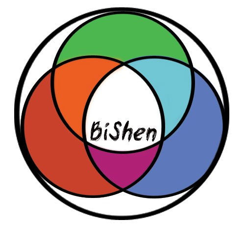
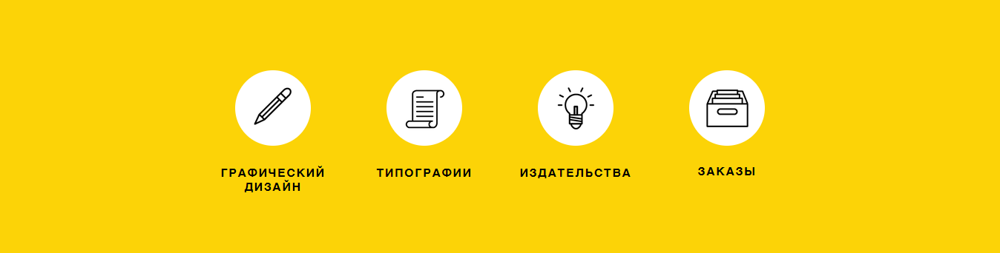
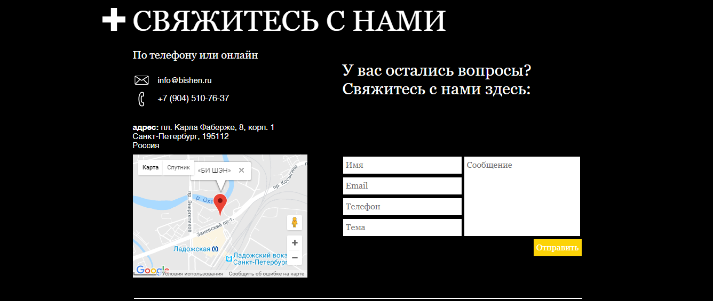

Большое количество заказов (для типографий и издательств). Огромный выбор типографий и издательств.
Выбери то, что нужно тебе.
Главная
Найти печатника
Найти заказ
Все о печати
О проекте
Личный кабинет
БИ ШЭН - это сервис по взаимодействию клиентов, желающих совершить заказ на печать любого рода продукции и исполнителями( типографии, идательства, графические дизайнеры). Цель проекта - возможность клиенту получить наиболее выгодное предложение среди всех типографий, издательств и графических дизайнеров города. А в свою очередь типографии, издательства и графические дизайнеры имеют возможность получить заказ клиента.
 